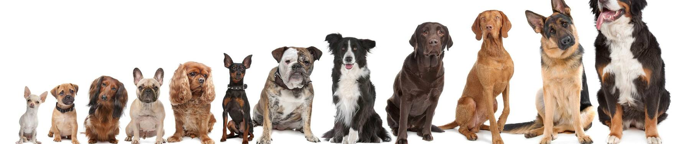

Binary Classification
This project involves building a Convolutional Neural Network (CNN) using Keras to classify images of dogs and cats. The model is trained on a dataset of images and then evaluated on a test set to determine its accuracy in distinguishing between the two classes.
Following are the key steps of project:
1. Data Loading and Exploration: Load the dataset and perform initial exploration to understand the structure and features of the data.
2. Data Preprocessing: Handle missing values, encode categorical variables, and scale numerical features to prepare the data for modeling.
3. Model Building: Building the CNN architecture and training the model on the training set.
4. Model Evaluation: Evaluating the model on the test set and calculating the accuracy.
5. Model Saving: Save the trained model using pickle for future use.